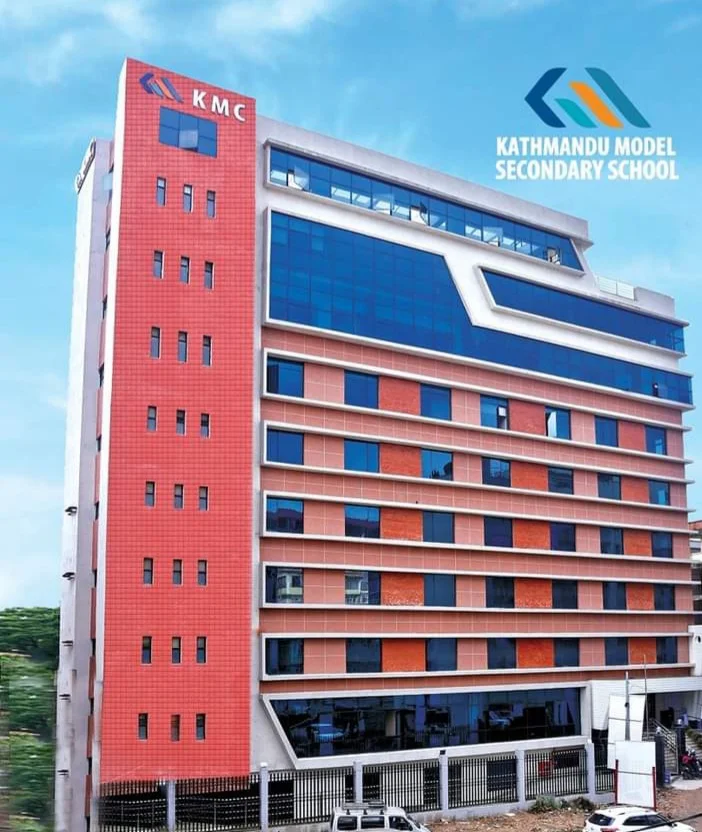
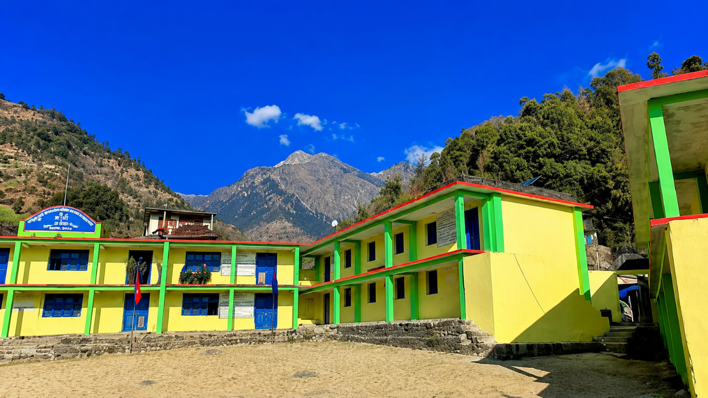

COMPUTER SCIENCE WITH ARTIFICIAL INTELLIGENCE
Learning by building, sharing, and improving.
Aspiring AI & Machine Learning Engineer
I'm passionate about Python programming, web development, Artificial Intelligence, and Machine Learning. I enjoy building practical projects, solving problems, and exploring new technologies.
About Me
A little about who I am and what I love learning.
Hello! I'm Sukundra Pujara, a Computer Science with Artificial Intelligence student at Softwarica College of IT and E-Commerce, in collaboration with Coventry University, UK.
Python is my main programming language, and I am continuously improving my skills in web development, databases, and machine learning. I believe in learning by doing, building practical projects, and sharing knowledge.
I enjoy tutoring beginners, explaining programming concepts simply, and helping others learn technology step by step. I am interested in internship opportunities where I can collaborate, gain practical experience, and grow my technical and problem-solving skills.
My goal is to become a skilled software developer and AI professional. Consistency, curiosity, teamwork, and hands-on practice are the keys to growing as a developer.
My Skills
Technologies and topics I am learning and practicing.
Approximate self-assessment of my current learning and practice—not formal test scores.
HTML
75%CSS
75%JavaScript
75%Artificial Intelligence
75%Machine Learning Fundamentals
75%Database Fundamentals
75%Python Tutoring
80%My Education
Building a foundation for a future in software and AI.
Current Education
Computer Science with Artificial Intelligence
Softwarica College of IT and E-Commerce · In collaboration with Coventry University, UK

Higher Secondary Education
Class 11 & 12 · Completed 2025
Kathmandu Model Secondary School (KMC), Kathmandu
Management faculty
Class 11 · GPA 3.66 (2024)
Class 12 · GPA 3.08 (2025)
Computer Science & Social Studies
After completing my SEE at Shree Surma Secondary School in 2023 with a GPA of 3.00, I continued my higher secondary education at KMC. During my school years, I developed an interest in computer technology, programming, communication, and personal development. I was a member of the school sports club and actively interested in cricket.
My academic journey helped me build confidence, discipline, and a strong foundation for higher education. My goal is to pursue a career in technology, particularly in Python development, Artificial Intelligence, and Data Science.

Secondary Education
Class 10 · SEE 2023
Shree Surma Secondary School, Bajhang · GPA 3.00
During my school days, I enjoyed learning new things, taking part in sports, exploring technology, and building my knowledge and skills. I believe in hard work, discipline, and continuous learning.
My goal is to fulfil my family's dreams and contribute positively to my community and country.
My Projects
Here are some of the projects I have worked on. More projects will be added soon.
Internship Experience
Organizations connected to my internship experience.
Softwarica College of IT and E-Commerce
Internship learning areas
- Web Development
- Software Development
- Artificial Intelligence
- Data Science
- Machine Learning Fundamentals
- Freelancing
- Robotics

My Certificates
Recognition, school involvement, and learning achievements.

Certificate of Appreciation
Sports Club · Kathmandu Model Secondary School Students Committee
View Certificate ↗
Research and Presentation
Certificate of Completion · August 2023 to February 2025
View Certificate ↗
Accounting Software (Tally ERP 9)
One-week training program · Kathmandu Model Secondary School · February 2025
View Certificate ↗Python Learning Hub
Study Python from your first print statement to advanced concepts.
Python Notes: Basic to Advanced includes a searchable curriculum, practical examples, lesson-by-lesson progress, and practice challenges.
Start learning Python →